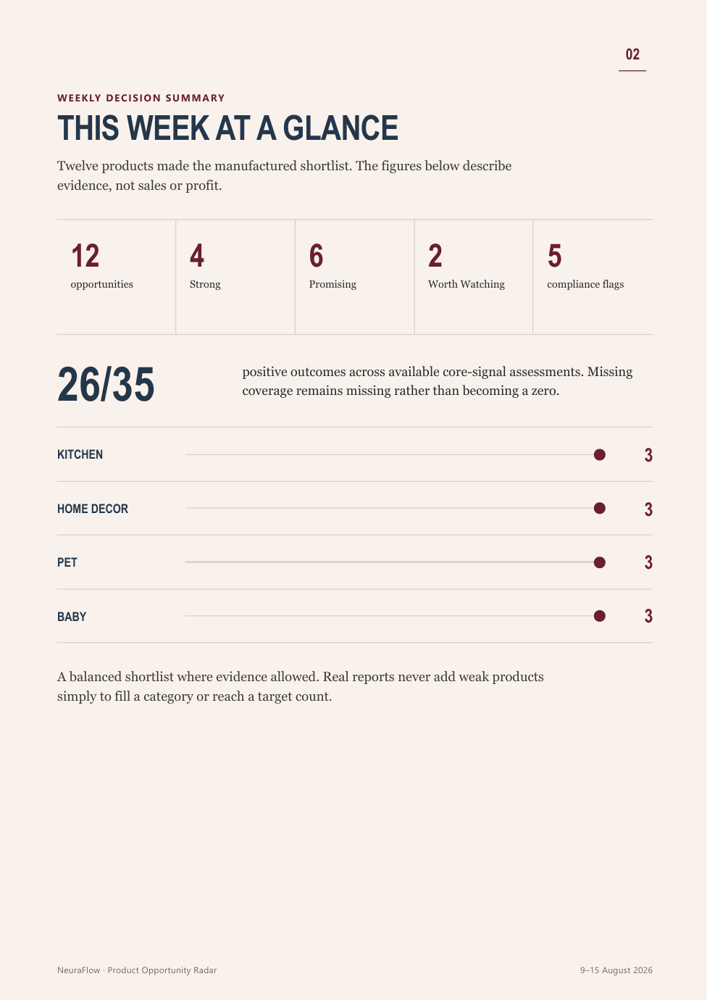
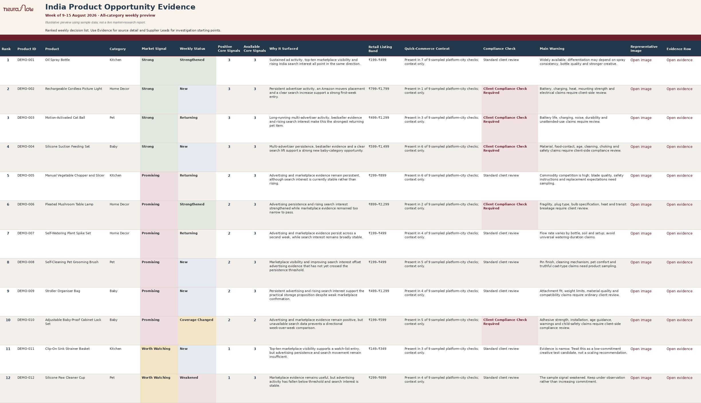

Mobile PDF
Decision brief
Scan the shortlist, reasons, weekly changes and review points comfortably on a phone.

Quick decision viewExcel workbook
Evidence view
Check the research behind each product, including sources, gaps and possible supplier leads.

Detailed evidence view4 reportseach month
Mondaynormal delivery day
Reviewedbefore delivery
PDF + Exceltwo useful formats